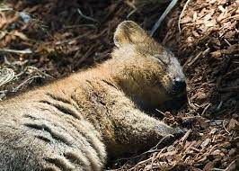

Merupakan Hewan Nokturnal
Quokka merupakan hewan nokturnal yang artinya hewan yang aktif di malam hari dan tidur di siang hari, ketika siang hari hewan ini biasanya tidur diantara tanaman paku untuk perlindungan dan juga persembunyian.
Quokka adalah hewan mungil dengan bulu pendek abu-abu coklat kasar dan memiliki telinga bulat kecil dan hidung hitam yang berasal dari pulau Rottnes, Australia. Hewan ini pertama kali ditemukan pada tahun 1696 dimana seorang penjelajah dari Belanda yang bernama Willem de Vlamingh yang mengira hewan ini sebagai tikus yang berukuran besar, sehingga Ia pun memberi nama pulau tersebut "Rattennest" (dalam bahasa Belanda menjadi "Rat Nest") yang kemudian berubah nama menjadi "Rottnest". Quokka juga dapat ditemukan didaerah Australia lainnya seperti daerah daratan Australia Barat dan Pulau bald (Bald Island). Quokka merupakan salah satu hewan yang menarik untuk dibahas, dan berikut adalah fakta - fakta menarik dari hewan ini.
Quokka merupakan hewan nokturnal yang artinya hewan yang aktif di malam hari dan tidur di siang hari, ketika siang hari hewan ini biasanya tidur diantara tanaman paku untuk perlindungan dan juga persembunyian.
Quokka memakan banyak jenis vegetasi, termasuk rerumputan, alang-alang, dan daun. Sebuah penelitian menemukan bahwa Guichenotia ledifolia yaitu spesies semak kecil dari keluarga Malvaceae, merupakan salah satu makanan favorit para quokka.Pengunjung Pulau Rottnest didesak untuk tidak pernah memberi makan quokka, sebagian karena makan "makanan manusia" dapat menyebabkan dehidrasi dan kekurangan gizi, yang keduanya merugikan kesehatan quokka. Meskipun relatif kekurangan air tawar di Pulau Rottnest, quokka memiliki kebutuhan air yang tinggi, yang sebagian besar dipenuhi dengan memakan tumbuh-tumbuhan. Di daratan, quokka hanya hidup di daerah yang memiliki curah hujan 600 mm (24 in) atau lebih per tahun. Quokka mengunyah makanan mereka, mirip dengan sapi.Jika kondisi alam dilanda kemarau panjang, quokka bisa bertahan cukup lama tanpa makanan atau air karena menyimpan lemak di ekor mereka.
Sama seperti kanguru, quokka juga berkembang biak dengan beranak. Di daratan Australia Barat, quokka bisa berkembang biak sepanjang tahun, namun di Pulau Rottnest mereka hanya bisa berkembang biak antara bulan Januari hingga Agustus. Masa kehamilan quokka hanya satu bulan, dan bayi yang disebut joey ini selanjutnya akan tinggal di kantung sang ibu selama enam bulan. Induk quokka bisa melahirkan dua kali dalam setahun. Selepas enam bulan, anak quokka sudah bisa meninggalkan kantung ibunya, namun ia masih bergantung pada air susu ibunya hingga dua bulan ke depan. Quokka bisa mulai beranak pinak saat usianya satu setengah tahun. Usia quokka di alam liar bisa mencapai sepuluh tahun.
Satwa khas Australia Barat ini termasuk satwa yang dilindungi, karena populasinya yang sedikit. Dalam Daftar Merah IUCN (Persatuan Internasional untuk Konservasi Alam), status konservasi quokka masuk dalam kategori rentan (vulnerable). Predator yang mengancam keberlangsungan kehidupan quokka adalah rubah, anjing liar dan kucing-kucing di daratan utama, namun di Pulau Rottnest ancaman justru datang dari manusia. Mamalia kecil ini, juga rentan terhadap penyakit otot, sebuah penyakit yang melemahkan dan merusak otot. Quokka membutuhkan penutup tanah yang lebat untuk berlindung. Penebangan tebang habis , pembangunan pertanian, dan perluasan perumahan telah mengurangi habitat mereka, berkontribusi pada penurunan spesies, seperti halnya pembukaan dan pembakaran lahan rawa yang tersisa. Selain itu, quokka biasanya memiliki ukuran sampah satu dan berhasil membesarkan satu anak setiap tahun. Meskipun mereka terus-menerus kawin, biasanya satu hari setelah anak lahir, ukuran serasah yang kecil, bersama dengan ruang terbatas dan predator yang mengancam, berkontribusi pada kelangkaan spesies di daratan.
Alasan mereka disebut binatang yang paling bahagia adalah karena mereka selalu terlihat tersenyum. Mereka sempat terkenal di tahun 2015 karena banyak sekali orang-orang yang melakukan selfie dengan binatang ini. Yang membuat binatang ini terkenal adalah saat turis-turis foto dengan mereka, mereka sedang tersenyum juga. Beda dengan binatang lain, mereka tidak takut dengan adanya manusia dan mereka tidak peduli dengan keadaan sekitar mereka. Maka dari itu, turis-turis bisa melihat mereka berlari di tengah-tengah taman atau dekat pepohonan. Mereka juga bisa saja masuk ke dalam bangunan atau restoran yang di sekitarnya terdapat pepohonan. Terkadang, ini mengganggu orang-orang local yang tinggal di pulau Australia tersebut. Namun, walaupun hewan ini tidak takut dengan manusia, dinyatakan ilegal untuk mengambil quokka liar dan menjadikannya binatang peliharaan.